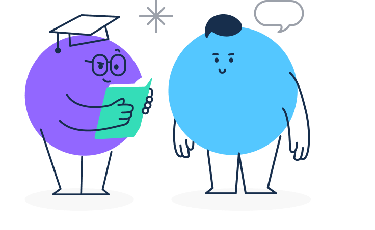
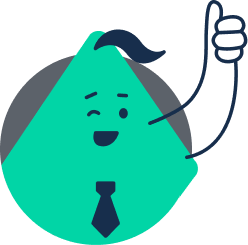
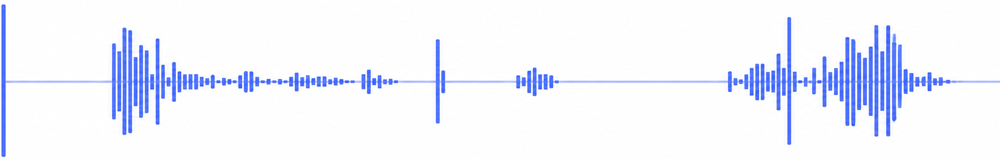

INFACE AI면접 결과 (2026.00.00 응시)
AI 역량 평가 리포트
홍길동 기획∙경영 00년차

영상분석 결과
감정 분석

면접 시 저장되었던 영상을 보여줍니다.
이러한 영상을 통해 응시자의 얼굴 표정, 면접 태도, 답변 내용을 확인 할 수 있습니다.
실제 대면 면접과 동일한 평가 기준으로 평가가 가능합니다.
16:9

설명
AI면접에서 가장 중요한 호감도 분석 결과를 확인 할 수 있습니다.
또한 영상 확인을 통해 시선처리와 좋지 않은 답변 습관 등을 확인 할 수 있습니다.
AI면접은 답변 내용도 중요하지만 이러한 안면인식 및 안면분석을 통해 정서와 호감도를 분석한 결과도 매우 중요합니다.
모든 동영상은 암호화되어 저장되며 동영상은 30일이 지나면 자동으로 삭제됩니다.
Vision Analysis
16:9
Q.
전공에서 제일 자신있는 과목과 그 이유는 무엇입니까?
그리고 그 과목에서 어떤 점수를 받았나요?
면접태도
정상
AI 안면인식 및 분석 기술로 응시자의 답변 시 태도에 대한 정보를 제공합니다.
이를 통해 자리를 이탈하거나 내용을 보고 읽는 등의 적절하지 않는 응시 태도인지 확인할 수 있어요!
주의가 나왔다면 태도에 유의해서 면접을 볼 수 있도록 많은 연습이 필요해요!
Voice Analysis
지원자의 Voice Analysis를 보여 줍니다. 이것을 통해 답변 시, 음성의 크기와 빠르게 그리고 휴지 등을 확인 할 수 있습니다.
이러한 확인을 통해 음성의 톤이 단조롭지 않는지, 답변이 빠르지 않은 지 등을 확인 할 수 있습니다.

음성분석
정상
AI음성분석 기술을 사용하여 응시자의 답변에서 발음이 정확한지 파악할 수 있습니다.
또한, 말의 빠르기 등도 적절한 속도와 비교하여 정보를 제시해줍니다.
발음 정확성
발화 속도
설명
AI 면접에서는 목소리에 대한 요소가 제일 중요합니다. 우선, 크고 또렷한 목소리로 대답을 해야 하며 목소리의 크기 역시 중요한데 약간은 큰 목소리로 대답하는 것이 좋습니다. 또한, 정확한 발음을 통해 음성이 텍스트로 올바르게 전환 될 수 있도록 해야 합니다. 주의할 것은 웅얼거리듯이 말하는 것입니다. 웅얼거리지 않도록
신경 써서 대답하는 것을 연습할 필요가 있습니다.
Verbal Analysis
설명
지원자의 답변을 분석하여 사용되는 어휘가 어떤 성향을 가지고 있는지 보여 줍니다. 긍정/부정/중립/복합단어 등 총 4개로 구분되어 제시 됩니다. 이와 같은 어휘 분석을 통해 지원자의 어휘 사용 습관, 말의 늬앙스 등을 알 수 있게 됩니다. 이러한 어휘 사용 습관이나 늬앙스 등은 응시자의 호감도에 영향을 주게 됩니다.